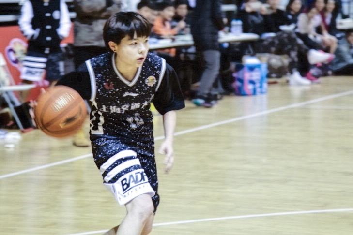
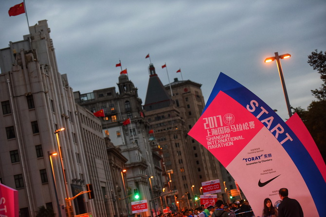

Education

|
Shanghai Jiao Tong University (SJTU) Major: B.S. in Electrical Engineering, Sept. 2015 to Jun. 2019 (Expected) Major GPA: 89/100 Rank: 11/58 |
Selected Projects
Apr. 2015 - May. 2018
- Link Prediction
May 2018 – Jul.2018
- Magic Mirror
Mar. 2018 – June 2018
- AlphaBar--Intelligent Cocktail Shaker
- Parametr calibration of CT system and image reconstruction
Skills
| Programming Languages |
|
| Tools |
|
Honors
|
|
2018 |
|
|
2018 |
|
|
2017&2016 |
|
|
2016 |
|
|
2018 |
|
|
2017 |
Activities
|  | I played in the women's school basketball team throughout my college years. Regardless of the intense academic tasks, I devoted myself to strenuous training of basketball, practicing skills and strengthen physical quality. Although the training was extremely exhausting, the teamwork and friendship made it the happiest and most valuable time in my school years. In 2017, our team won the Championship in CUBA, Shanghai District. |
|  | I volunteered in 2016&2017 Shanghai International Marathon. I was responsible for the preparation and organization of Shanghai International Marathon. I have huge passion in sports as well as doing voluntary work, so I volunteered in 2016&2017 Shanghai International Marathon, which is an annual internationl marathon meanwhile a great fun. I built up team with other volunteers and helped maintain order, distribute supplies and cheer up for the players. In this event I also made many friends with similar interests. Shanghai International Marathon is a very meaningful and interesting event, and I hope next time I can participate in this party as a runner! |